devtools::load_all() # if using the rproject dowloaded from the slides
# source("utils-glm.R") # if using a standard setup
library(here)
library(tidyr) # for data manipulation
library(dplyr) # for data manipulation
library(ggplot2) # plotting
library(car) # general utilities
library(effects) # for extracting and plotting effects
library(emmeans) # for marginal meansLab 5
data("nwords")
dat <- nwordsOverview
This dataset nwords represent a developmental psychology study investigating the factors that influence children language development. The dataset includes information about the number of words in a a language task, and some potential predictors: caregiver behavior, socioeconomic status, amount of time spent with the child during a week and the presence of a baby-sitter or not.
child: numeric variable representing the child ID number.timebonding: numeric variable representing the average hours per week of child-parent activitiesnwords: numeric variable representing the number of words produced by the child in a language task.caregiving: numeric variable representing the caregiver’s behavior in a parent-child interaction task, measured on a scale from 0 to 10ses: categorical variable representing the family socioeconomic status, with three levels: “Low”, “Middle”, and “High”
- Importing data and overall check
- think about factors levels, scale of the numerical variables, etc.
- Exploratory data analysis of predictors and the relationships between predictors and the number of words
- Model fitting with
glm()andpoissonfamily starting from additive models and then adding the interactions. - Model diagnostic of the chosen model
- overdispersion
- residuals
- outliers and influential points
- Interpreting the effects and plotting
- Fit a quasi-poisson and negative binomial version of the chosen model, and check how parameters are affected
1. Importing data and overall check
dat <- read.csv("data/nwords.csv")str(dat)'data.frame': 150 obs. of 6 variables:
$ id : int 1 2 3 4 5 6 7 8 9 10 ...
$ timebonding: num 23 18 20 23 11 5 15 18 29 22 ...
$ caregiving : num 7 8 7 11 8 5 4 5 14 9 ...
$ ses : Factor w/ 3 levels "low","middle",..: 1 1 1 1 1 1 1 1 1 1 ...
..- attr(*, "contrasts")= num [1:3, 1:2] 0 1 0 0 0 1
.. ..- attr(*, "dimnames")=List of 2
.. .. ..$ : chr [1:3] "low" "middle" "high"
.. .. ..$ : chr [1:2] "2" "3"
$ babysitter : Factor w/ 2 levels "no","yes": 1 1 1 2 1 2 1 2 1 1 ...
..- attr(*, "contrasts")= num [1:2, 1] 0 1
.. ..- attr(*, "dimnames")=List of 2
.. .. ..$ : chr [1:2] "no" "yes"
.. .. ..$ : chr "2"
$ nwords : int 24 20 16 38 14 17 17 35 30 13 ...Check for NA values:
sapply(dat, function(x) sum(is.na(x))) id timebonding caregiving ses babysitter nwords
0 0 0 0 0 0 Everything seems good, we do not have NA values.
Let’s convert categorical variables into factor setting the appropriate order:
ses: low, middle, highbabysitter: no, yes
dat$ses <- factor(dat$ses, levels = c("low", "middle", "high"))
dat$babysitter <- factor(dat$babysitter, levels = c("no", "yes"))
levels(dat$ses)[1] "low" "middle" "high" levels(dat$babysitter)[1] "no" "yes"timebonding and caregiving are the two numerical predictors. Given that we are going to fit main effects and interactions and we want to interpret the intercept and test the interaction on a meaningful point, we create two centered versions of these variables:
dat$timebonding0 <- dat$timebonding - mean(dat$timebonding)
dat$caregiving0 <- dat$caregiving - mean(dat$caregiving)Then we can see what happen to the variables:
cols <- grepl("timebonding|caregiving", names(dat))
lapply(dat[, cols], function(x) round(c(mean = mean(x), sd = sd(x)), 3))$timebonding
mean sd
14.807 8.736
$caregiving
mean sd
5.420 2.841
$timebonding0
mean sd
0.000 8.736
$caregiving0
mean sd
0.000 2.841 2. Exploratory data analysis
summary(dat) id timebonding caregiving ses babysitter
Min. : 1.00 Min. : 0.00 Min. : 0.00 low :45 no :83
1st Qu.: 38.25 1st Qu.: 8.00 1st Qu.: 4.00 middle:75 yes:67
Median : 75.50 Median :14.00 Median : 5.00 high :30
Mean : 75.50 Mean :14.81 Mean : 5.42
3rd Qu.:112.75 3rd Qu.:21.00 3rd Qu.: 7.00
Max. :150.00 Max. :37.00 Max. :14.00
nwords timebonding0 caregiving0
Min. : 2.00 Min. :-14.8067 Min. :-5.42
1st Qu.:10.00 1st Qu.: -6.8067 1st Qu.:-1.42
Median :17.00 Median : -0.8067 Median :-0.42
Mean :19.96 Mean : 0.0000 Mean : 0.00
3rd Qu.:27.00 3rd Qu.: 6.1933 3rd Qu.: 1.58
Max. :54.00 Max. : 22.1933 Max. : 8.58 Let’s do some plotting of predictors:
par(mfrow = c(2,2))
hist(dat$timebonding)
hist(dat$caregiving)
barplot(table(dat$babysitter))
barplot(table(dat$ses))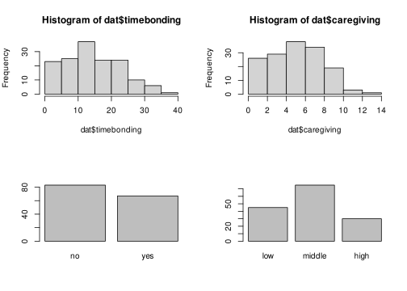
Comments?
Also the response variable:
hist(dat$nwords, probability = TRUE)
lines(density(dat$nwords), col = "salmon", lwd = 2)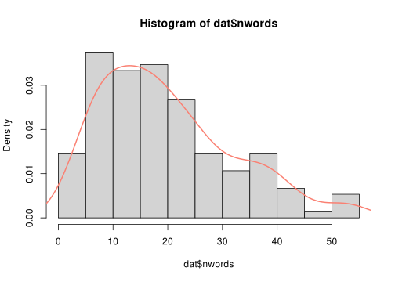
Let’s plot the theoretical distributions, Poisson and Gaussian:
m <- mean(dat$nwords)
s <- sd(dat$nwords)
xs <- seq(0, 50, 1)
hist(dat$nwords, probability = TRUE, xlim = c(-10, 50), ylim = c(0, 0.1))
curve(dnorm(x, m, s), add = TRUE, col = "green", lwd = 2)
lines(xs, dpois(xs, m), col = "red", lwd = 2)
lines(xs, dpois(xs, m), col = "red", lwd = 2)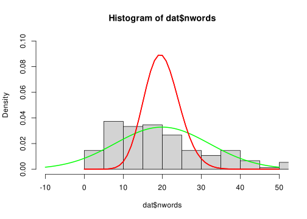
Comments?
Let’s plot some bivariate distributions:
# caregiving ~ timebonding
r <- cor(dat$timebonding, dat$caregiving)
plot(dat$timebonding, dat$caregiving, pch = 19)
abline(lm(dat$caregiving ~ dat$timebonding), col = "red", lwd = 2)
text(30, 2, label = paste("r =", round(r, 2)))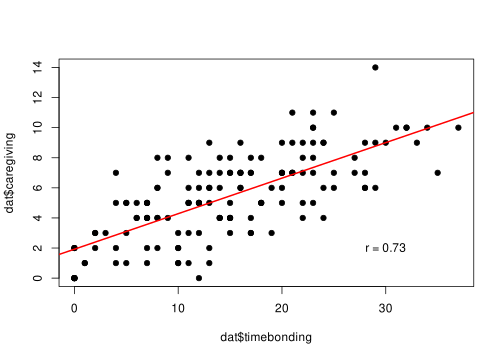
par(mfrow = c(1,2))
boxplot(caregiving ~ ses, data = dat)
boxplot(timebonding ~ ses, data = dat)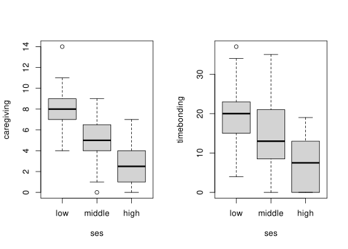
mosaicplot(table(dat$ses, dat$babysitter))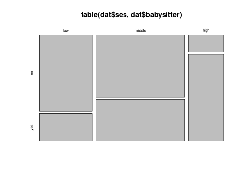
# or
barplot(table(dat$babysitter, dat$ses), col = c("red", "green"), beside = TRUE)
legend(7,45, legend = c("no", "yes"), fill = c("red", "green"))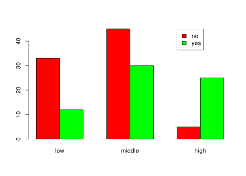
par(mfrow = c(1,2))
boxplot(caregiving ~ babysitter, data = dat)
boxplot(timebonding ~ babysitter, data = dat)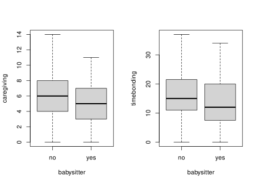
Then the relationships with the nwords variable:
par(mfrow = c(2,2))
plot(dat$timebonding, dat$nwords, pch = 19)
plot(dat$caregiving, dat$nwords, pch = 19)
boxplot(dat$nwords ~ dat$ses)
boxplot(dat$nwords ~ dat$babysitter)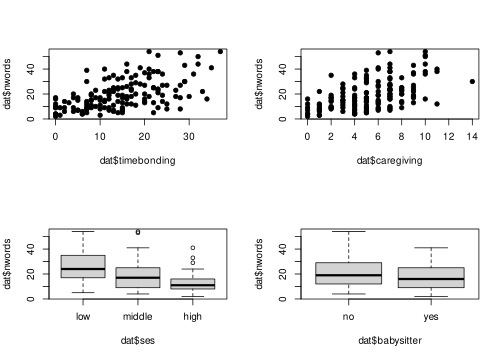
Comments?
Finally some interactions plot (with lm):
par(mfrow = c(2,1))
colors <- c(low = "red", middle = "blue", high = "green")
plot(dat$timebonding, dat$nwords, col = colors[dat$ses], pch = 19)
lms <- lapply(split(dat, dat$ses), function(x) lm(nwords ~ timebonding, data = x))
lapply(1:length(lms), function(i) abline(lms[[i]], col = colors[i], lwd = 2))[[1]]
NULL
[[2]]
NULL
[[3]]
NULLplot(dat$caregiving, dat$nwords, col = colors[dat$ses], pch = 19)
lms <- lapply(split(dat, dat$ses), function(x) lm(nwords ~ caregiving, data = x))
lapply(1:length(lms), function(i) abline(lms[[i]], col = colors[i], lwd = 2))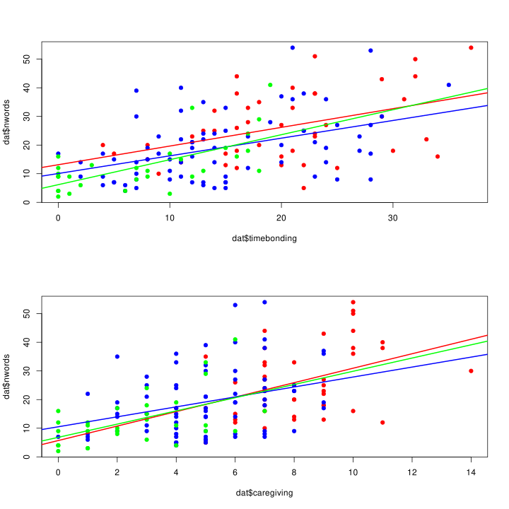
[[1]]
NULL
[[2]]
NULL
[[3]]
NULLpar(mfrow = c(2,1))
colors <- c(no = "orange", yes = "purple")
plot(dat$timebonding, dat$nwords, col = colors[dat$babysitter], pch = 19)
lms <- lapply(split(dat, dat$babysitter), function(x) lm(nwords ~ timebonding, data = x))
lapply(1:length(lms), function(i) abline(lms[[i]], col = colors[i], lwd = 2))[[1]]
NULL
[[2]]
NULLplot(dat$caregiving, dat$nwords, col = colors[dat$babysitter], pch = 19)
lms <- lapply(split(dat, dat$babysitter), function(x) lm(nwords ~ caregiving, data = x))
lapply(1:length(lms), function(i) abline(lms[[i]], col = colors[i], lwd = 2))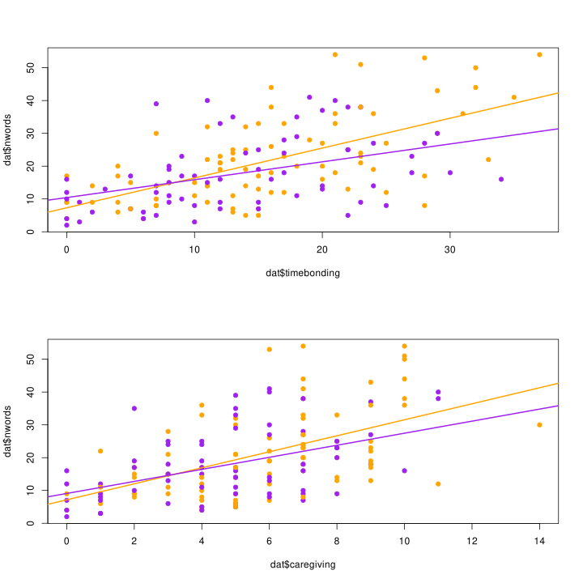
[[1]]
NULL
[[2]]
NULL3. Model fitting with glm() and poisson
Let’s start by using an additive model:
fit <- glm(nwords ~ timebonding + caregiving + babysitter + ses, family = poisson(link = "log"), data = dat)
summary(fit)
Call:
glm(formula = nwords ~ timebonding + caregiving + babysitter +
ses, family = poisson(link = "log"), data = dat)
Coefficients:
Estimate Std. Error z value Pr(>|z|)
(Intercept) 2.38233 0.08162 29.187 < 2e-16 ***
timebonding 0.02468 0.00298 8.283 < 2e-16 ***
caregiving 0.04572 0.01139 4.014 5.97e-05 ***
babysitteryes -0.05342 0.04051 -1.319 0.187
sesmiddle -0.03297 0.04910 -0.672 0.502
seshigh -0.11921 0.08057 -1.480 0.139
---
Signif. codes: 0 '***' 0.001 '**' 0.01 '*' 0.05 '.' 0.1 ' ' 1
(Dispersion parameter for poisson family taken to be 1)
Null deviance: 1074.54 on 149 degrees of freedom
Residual deviance: 703.21 on 144 degrees of freedom
AIC: 1411.1
Number of Fisher Scoring iterations: 4And always plotting before anything else:
plot(allEffects(fit))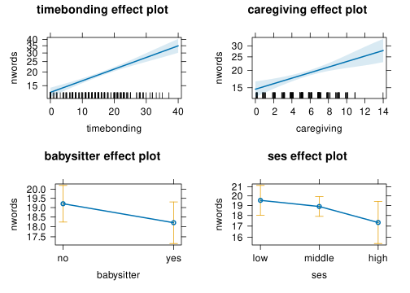
Comments? How could you describe the results? Something different from the descriptive statistics?
car::residualPlots(fit)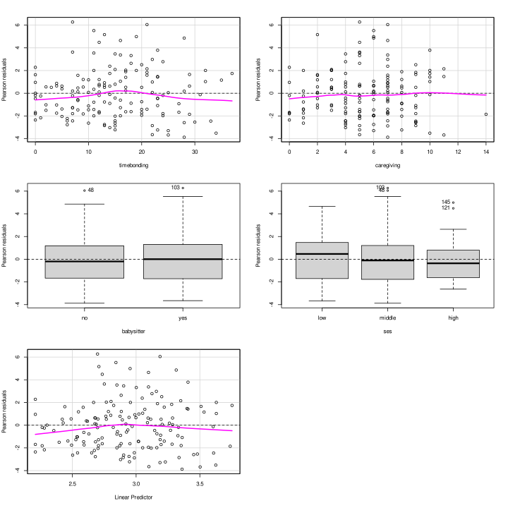
Test stat Pr(>|Test stat|)
timebonding 8.4288 0.003693 **
caregiving 6.5550 0.010459 *
babysitter
ses
---
Signif. codes: 0 '***' 0.001 '**' 0.01 '*' 0.05 '.' 0.1 ' ' 1Comments? Are we missing something?
dat |>
ggplot(aes(x = timebonding, y = nwords, color = ses)) +
geom_point() +
stat_smooth(method = "glm", method.args = list(family = poisson()), se = FALSE)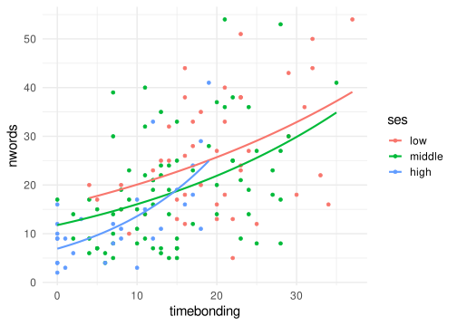
dat |>
ggplot(aes(x = caregiving, y = nwords, color = ses)) +
geom_point() +
stat_smooth(method = "glm", method.args = list(family = poisson()), se = FALSE)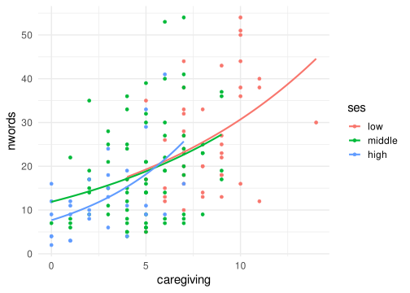
dat |>
ggplot(aes(x = timebonding, y = nwords, color = babysitter)) +
geom_point() +
stat_smooth(method = "glm", method.args = list(family = poisson()), se = FALSE)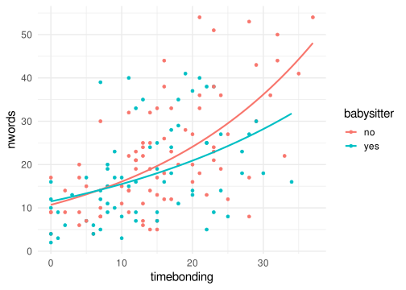
dat |>
ggplot(aes(x = caregiving, y = nwords, color = babysitter)) +
geom_point() +
stat_smooth(method = "glm", method.args = list(family = poisson()), se = FALSE)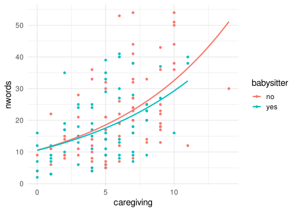
Let’s add some interactions:
fit2 <- glm(nwords ~ timebonding*ses + caregiving*ses + timebonding*babysitter + caregiving*babysitter, family = poisson(link = "log"), data = dat)
summary(fit2)
Call:
glm(formula = nwords ~ timebonding * ses + caregiving * ses +
timebonding * babysitter + caregiving * babysitter, family = poisson(link = "log"),
data = dat)
Coefficients:
Estimate Std. Error z value Pr(>|z|)
(Intercept) 2.449904 0.130572 18.763 < 2e-16 ***
timebonding 0.025282 0.005037 5.020 5.18e-07 ***
sesmiddle -0.118244 0.147663 -0.801 0.4233
seshigh -0.731529 0.172366 -4.244 2.20e-05 ***
caregiving 0.036904 0.019566 1.886 0.0593 .
babysitteryes 0.208781 0.106645 1.958 0.0503 .
timebonding:sesmiddle 0.012661 0.006201 2.042 0.0412 *
timebonding:seshigh 0.057886 0.012124 4.775 1.80e-06 ***
sesmiddle:caregiving -0.026875 0.024638 -1.091 0.2754
seshigh:caregiving -0.027161 0.039418 -0.689 0.4908
timebonding:babysitteryes -0.029552 0.006247 -4.731 2.24e-06 ***
caregiving:babysitteryes 0.039355 0.019464 2.022 0.0432 *
---
Signif. codes: 0 '***' 0.001 '**' 0.01 '*' 0.05 '.' 0.1 ' ' 1
(Dispersion parameter for poisson family taken to be 1)
Null deviance: 1074.54 on 149 degrees of freedom
Residual deviance: 654.95 on 138 degrees of freedom
AIC: 1374.8
Number of Fisher Scoring iterations: 4plot(allEffects(fit2))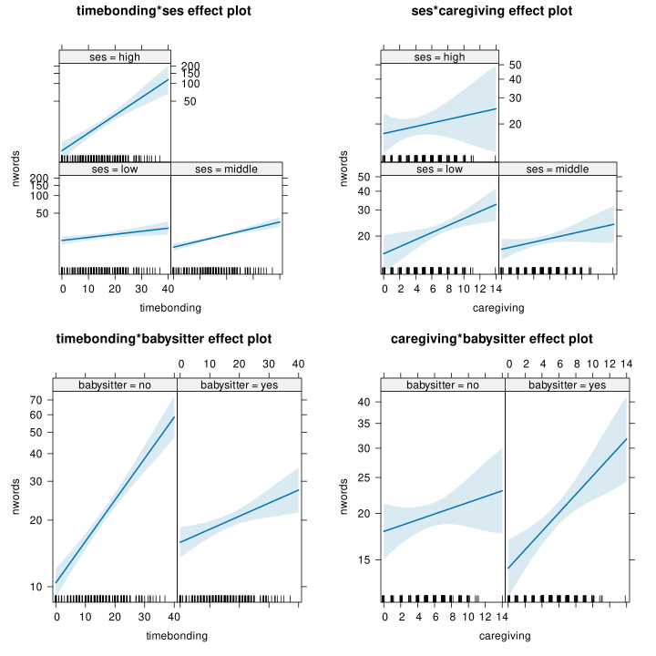
4. Model fitting with MASS::glm.nb()
There is still evidence for overdispersion, even after including all predictors and a series of interactions. Let’s assume that this is our most complex model, we need to take into account the overdispersion:
performance::check_overdispersion(fit2)# Overdispersion test
dispersion ratio = 4.710
Pearson's Chi-Squared = 649.938
p-value = < 0.001fit3 <- MASS::glm.nb(nwords ~ timebonding*ses + caregiving*ses + timebonding*babysitter + caregiving*babysitter, data = dat)
summary(fit3)
Call:
MASS::glm.nb(formula = nwords ~ timebonding * ses + caregiving *
ses + timebonding * babysitter + caregiving * babysitter,
data = dat, init.theta = 5.511283984, link = log)
Coefficients:
Estimate Std. Error z value Pr(>|z|)
(Intercept) 2.42447 0.30858 7.857 3.94e-15 ***
timebonding 0.02188 0.01220 1.793 0.0729 .
sesmiddle -0.12795 0.33725 -0.379 0.7044
seshigh -0.65153 0.35611 -1.830 0.0673 .
caregiving 0.04869 0.04756 1.024 0.3060
babysitteryes 0.20747 0.20566 1.009 0.3131
timebonding:sesmiddle 0.01417 0.01450 0.978 0.3282
timebonding:seshigh 0.05378 0.02394 2.246 0.0247 *
sesmiddle:caregiving -0.02627 0.05691 -0.462 0.6444
seshigh:caregiving -0.03298 0.08127 -0.406 0.6849
timebonding:babysitteryes -0.02536 0.01392 -1.822 0.0684 .
caregiving:babysitteryes 0.02732 0.04305 0.635 0.5257
---
Signif. codes: 0 '***' 0.001 '**' 0.01 '*' 0.05 '.' 0.1 ' ' 1
(Dispersion parameter for Negative Binomial(5.5113) family taken to be 1)
Null deviance: 249.03 on 149 degrees of freedom
Residual deviance: 154.97 on 138 degrees of freedom
AIC: 1093
Number of Fisher Scoring iterations: 1
Theta: 5.511
Std. Err.: 0.835
2 x log-likelihood: -1066.951 Now overdispersion is taken into account and standard errors are larger:
car::compareCoefs(fit2, fit3)Calls:
1: glm(formula = nwords ~ timebonding * ses + caregiving * ses +
timebonding * babysitter + caregiving * babysitter, family = poisson(link =
"log"), data = dat)
2: MASS::glm.nb(formula = nwords ~ timebonding * ses + caregiving * ses +
timebonding * babysitter + caregiving * babysitter, data = dat, init.theta =
5.511283984, link = log)
Model 1 Model 2
(Intercept) 2.450 2.424
SE 0.131 0.309
timebonding 0.02528 0.02188
SE 0.00504 0.01220
sesmiddle -0.118 -0.128
SE 0.148 0.337
seshigh -0.732 -0.652
SE 0.172 0.356
caregiving 0.0369 0.0487
SE 0.0196 0.0476
babysitteryes 0.209 0.207
SE 0.107 0.206
timebonding:sesmiddle 0.0127 0.0142
SE 0.0062 0.0145
timebonding:seshigh 0.0579 0.0538
SE 0.0121 0.0239
sesmiddle:caregiving -0.0269 -0.0263
SE 0.0246 0.0569
seshigh:caregiving -0.0272 -0.0330
SE 0.0394 0.0813
timebonding:babysitteryes -0.02955 -0.02536
SE 0.00625 0.01392
caregiving:babysitteryes 0.0394 0.0273
SE 0.0195 0.0431
# test statistics for the poisson model
data.frame(
poisson = fit2$coefficients/sqrt(diag(vcov(fit2))),
negative_binomial = fit3$coefficients/sqrt(diag(vcov(fit3)))
) poisson negative_binomial
(Intercept) 18.7628976 7.8567464
timebonding 5.0195056 1.7932210
sesmiddle -0.8007732 -0.3794009
seshigh -4.2440539 -1.8295760
caregiving 1.8861966 1.0237380
babysitteryes 1.9577133 1.0087898
timebonding:sesmiddle 2.0417940 0.9777883
timebonding:seshigh 4.7746326 2.2463830
sesmiddle:caregiving -1.0907766 -0.4615336
seshigh:caregiving -0.6890598 -0.4057725
timebonding:babysitteryes -4.7305937 -1.8221897
caregiving:babysitteryes 2.0219802 0.6345467